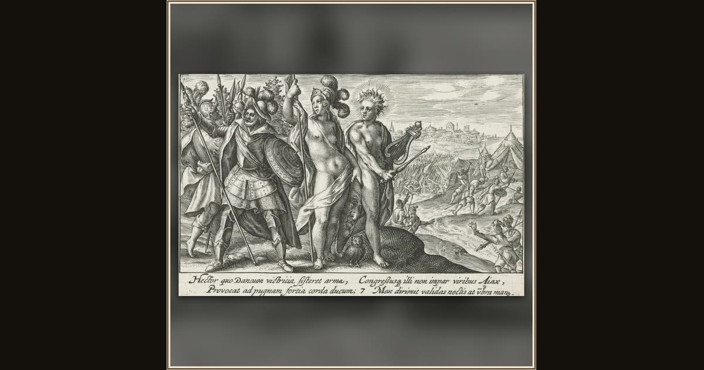

Minerva en Apollo verleiden Hector te vechten (Minerva and Apollo induce Hector to fight)
Crispijn van de Passe (I) · 1613 · rijksmuseum
Athena with her owl and Apollo with his lyre stand beside the armed Hector; the museum describes them urging him to fight the Greeks, as they agree to do (7.17–42) Explore its place in Homer's Iliad, Book VII, line 17.